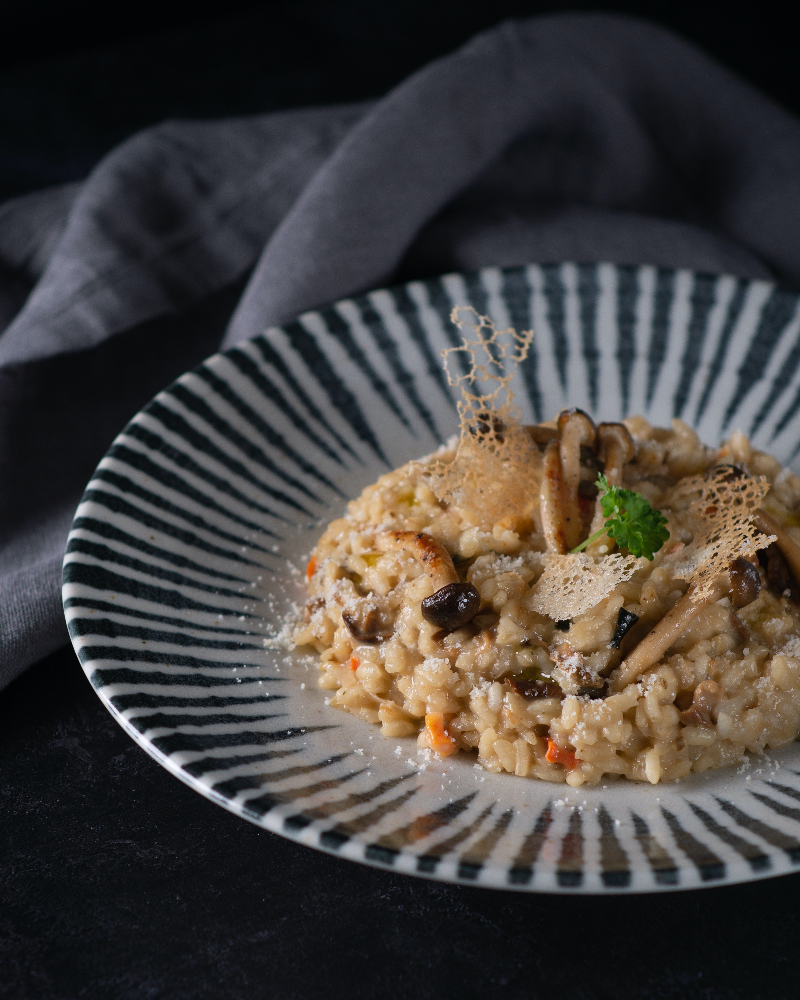

Mushroom risotto recipe

What's a risotto?
Risotto is a rice dish, typically made with a high-starch round-grain rice, that is cooked in broth until it reaches a creamy consistency. It originated in the northern
regions of Italy. In this version, we will not be including Parmigiano nor a animal-derived broth so as to make a compassionate dish.
What will you need?
- Round-grain rice (we will use a variety called Arborio
- A high quality vegetable broth
- Your favourite mushrooms (we will use Shiitake and champignon)
- Onions and garlic
- Extra virgin olive oil
- Spices
- Salt
- Saffron
- White wine
- Parsley
How to do it?
- Chop the mushrooms in not too small chunks and sauté them in oil with some garlic. Reserve for later.
- Heat your vegetable broth and incorporate the saffron to it.
- Dice onions and garlic and add them to the pan where you'll cook your risotto with some oil and wine at medium heat. Once soft add your rice. Do not wash the rice
before adding it. Toast it for 1 minute.
- Add a cup of the vegetable broth and stir it continuously. Once you notice it's absorbed add another cup. Repeat this step adding one cup at a time until
the rice is al dente. Then, turn off the heat.
- Add the mushrooms to the risotto along with the parsley and mix it together. Serve immediately.
Buon appetito!